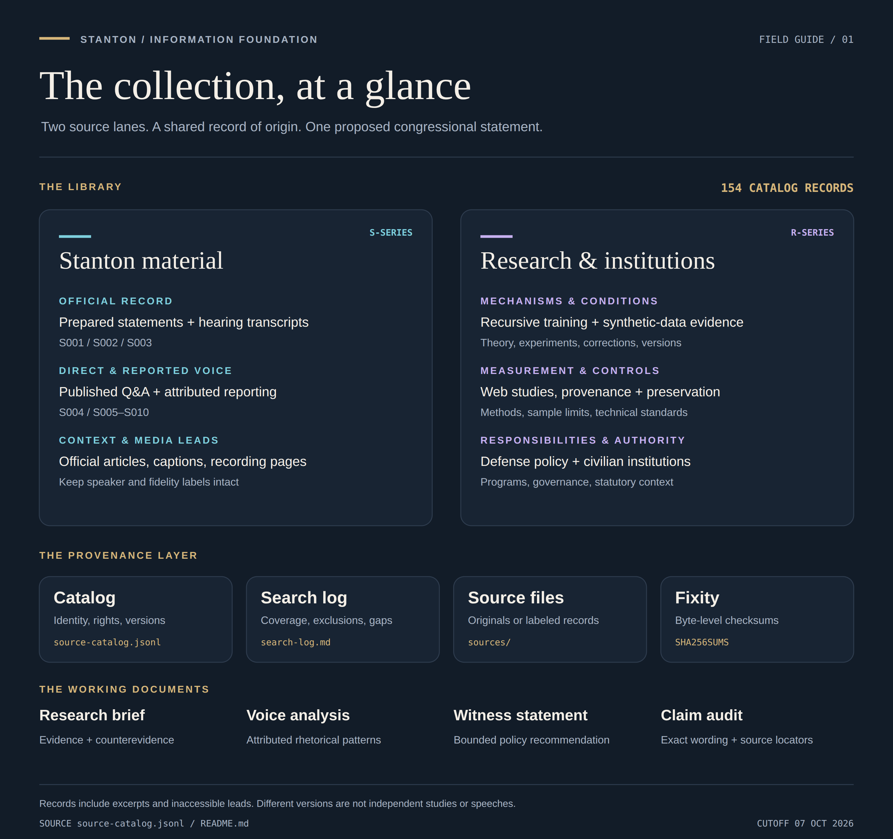
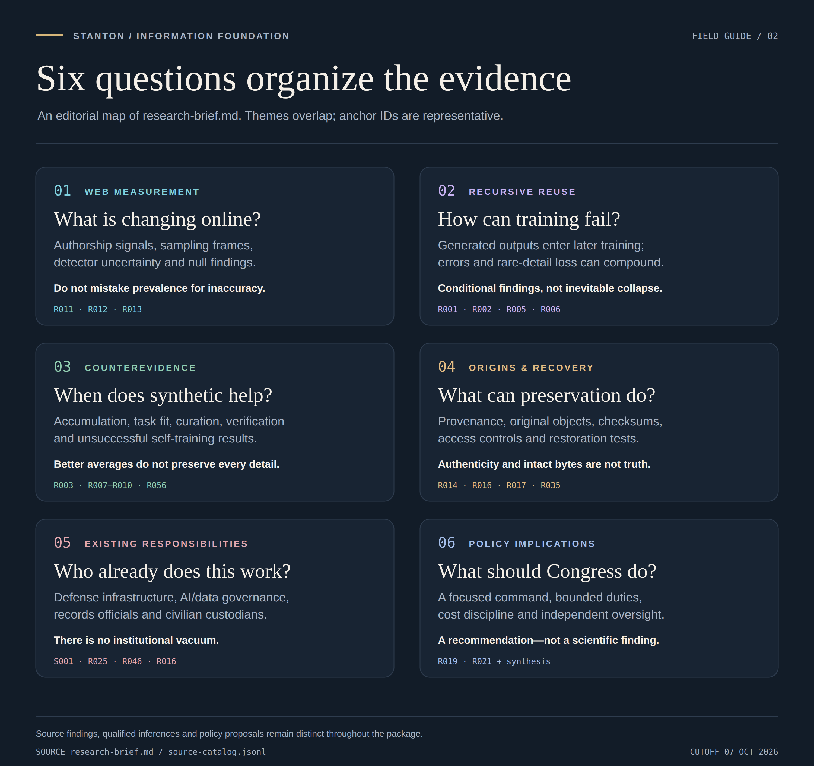
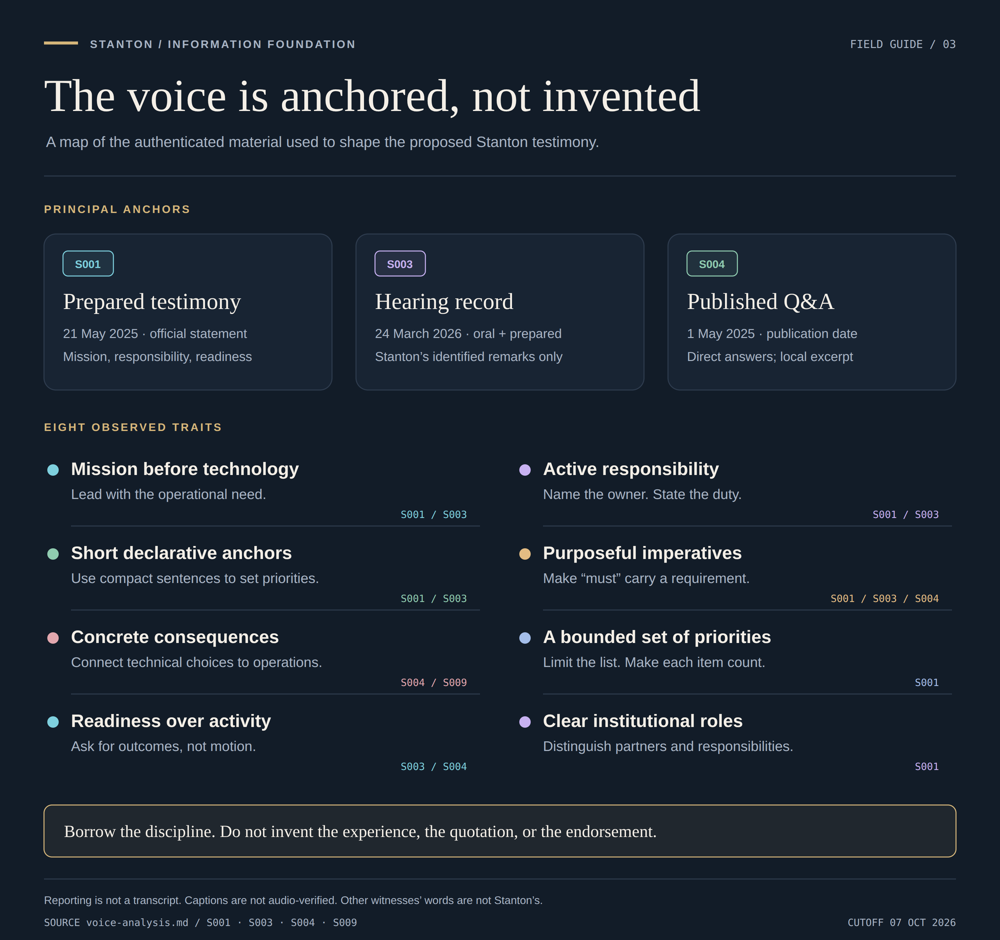
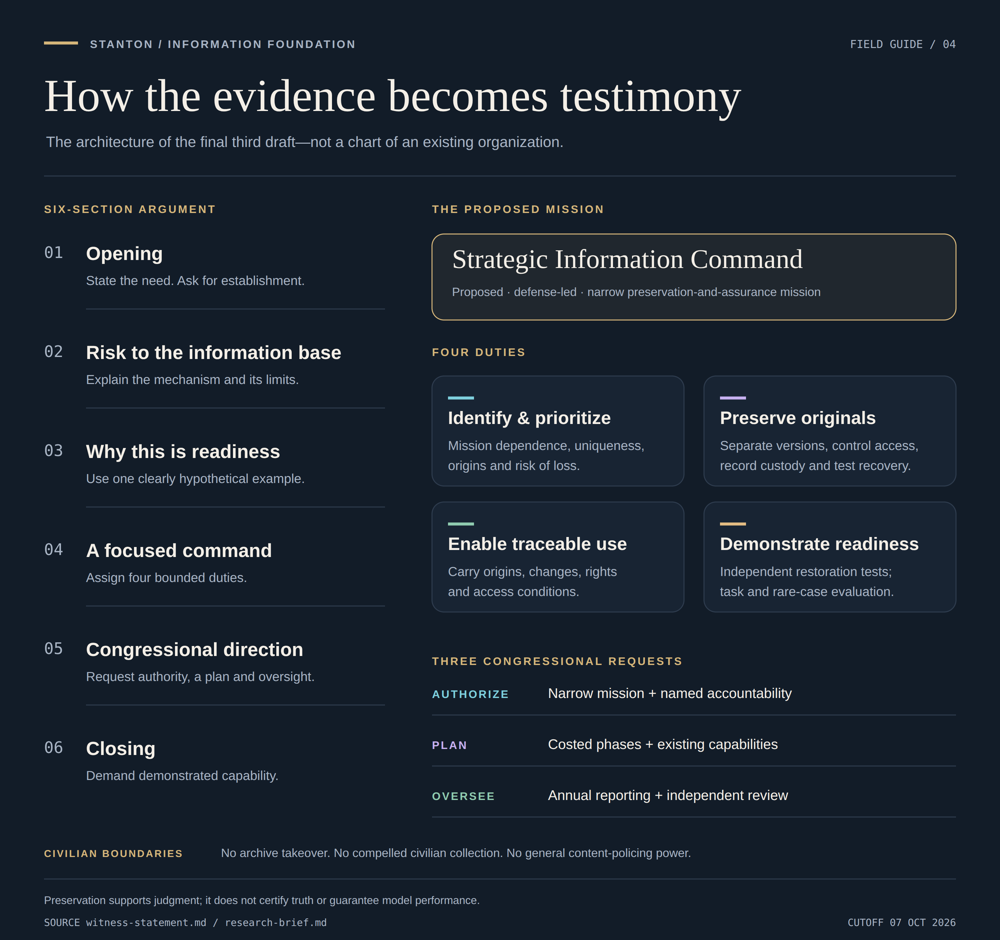

Collection atlas
The two source lanes, provenance records, and working documents.

Research landscape
Six organizing questions, representative source anchors, and evidence limits.

Stanton voice map
Three principal anchors and eight source-grounded rhetorical traits.

Speech architecture
Six sections, four proposed duties, and three congressional requests.